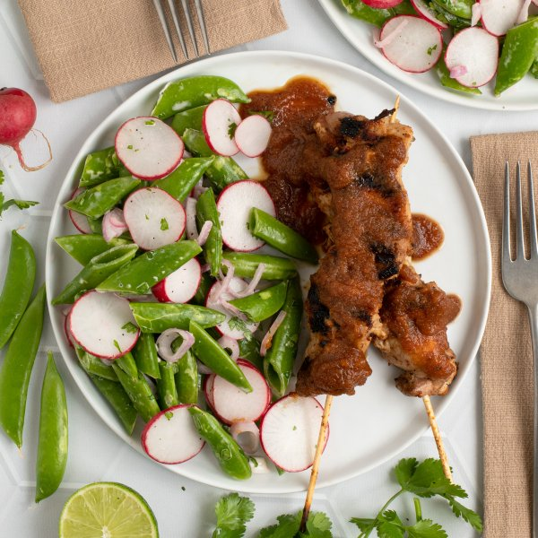

Grilled Apple BBQ Chicken Skewers with Snap Pea, Lime & Radish Salad

Total Time
35 min
Nutrition (Per Serving)
573.7 kcalCalories
51.6 gProtein
41.8 gCarbs
23.1 gFat
Full nutrition table
| Calories | 573.7 kcal |
| Total fat | 23.1 g |
| Saturated fat | 4.5 g |
| Trans fat | 0.1 g |
| Cholesterol | 216.2 mg |
| Sodium | 578.9 mg |
| Carbohydrates | 41.8 g |
| Fiber | 8.5 g |
| Sugars | 26.3 g |
| Protein | 51.6 g |
| Potassium | 1473.7 mg |
| Calcium | 136.8 mg |
| Iron | 5.9 mg |
| Vitamin A | 292.6 IU |
| Vitamin C | 103.2 mg |
| Vitamin D | 2.9 IU |
Cookware
Ingredients
- 2 lbchicken thighs, boneless skinless
- 1 small bunchcilantro
- 2Gala apples
- 2limes
- 2 bunchesradish
- 1shallot
- 2 (8 oz) pkgsugar snap peas
- apple cider vinegar
- black pepper
- brown sugar
- chili powder
- extra virgin olive oil
- garlic powder
- ketchup
- mayonnaise
- salt
- soy sauce
- Worcestershire sauce
Steps
- If using wooden skewers, place 8-12 skewers in a shallow dish of water to soak until you are ready to use them.
- Wash and dry the fresh produce.2 Gala apples
2 limes
2 (8 oz) pkg sugar snap peas
2 bunches radish
1 small bunch cilantro - Peel, quarter, and core apples; roughly chop and place in a blender.
- Add ketchup, water, soy sauce, vinegar, sugar, Worcestershire, and spices to the blender with the apple. Blend on high until BBQ sauce is smooth, adding water 1 tablespoon at a time, if needed, to reach a saucy consistency; set aside.½ cup ketchup
¼ cup water
¼ cup soy sauce
2 tsp apple cider vinegar
2 tsp brown sugar
1 tsp Worcestershire sauce
1 tsp garlic powder
1 tsp chili powder
¼ tsp black pepper - Pat chicken dry with paper towels and slice lengthwise into 1-inch thick strips; thread onto skewers and transfer to a plate. (If you don't have skewers, you can cook the chicken directly on the grill pan.)2 lb chicken thighs, boneless skinless
- Preheat a grill pan, outdoor grill, or regular skillet over medium-high heat.
- While the grill pan heats up, coat skewers with half of the sauce. (Reserve remaining sauce for the next step.)
- Once the grill pan is hot, coat with oil; working in batches if necessary, add the skewers and grill, turning occasionally, until the chicken is cooked through, 8-10 minutes. Remove to a clean plate and coat with remaining sauce.4 tsp extra virgin olive oil
- Meanwhile, juice limes into a medium bowl, then add oil, mayo, salt, and pepper; whisk to combine the dressing.4 tsp extra virgin olive oil
4 tsp mayonnaise
½ tsp salt
¼ tsp black pepper - Using a clean cutting board, peel, halve, and slice shallot into thin half-moons; add to the bowl with the dressing.1 shallot
- Halve snap peas; trim and thinly slice radishes. Add both to the bowl.
- Shave cilantro leaves off the stems; discard stems and mince the leaves. Add to the bowl and stir to combine the salad.
- To serve, divide BBQ chicken skewers and salad between plates. Enjoy!